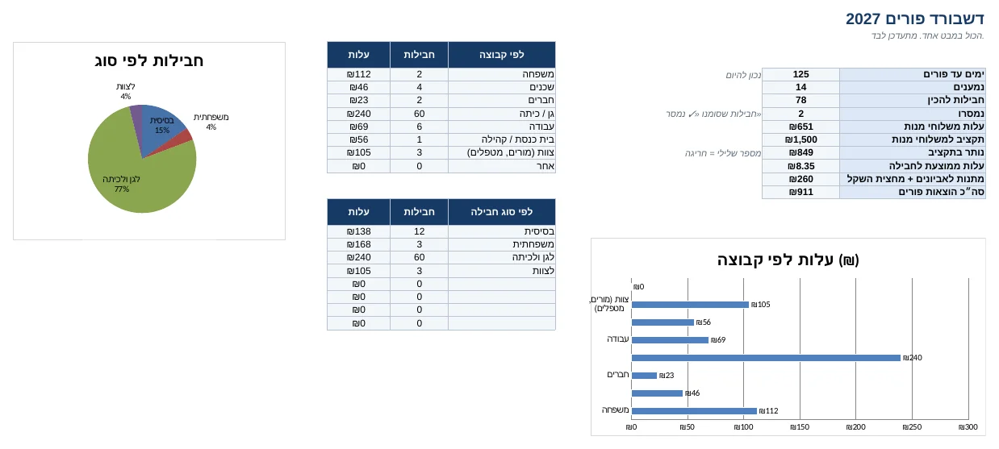
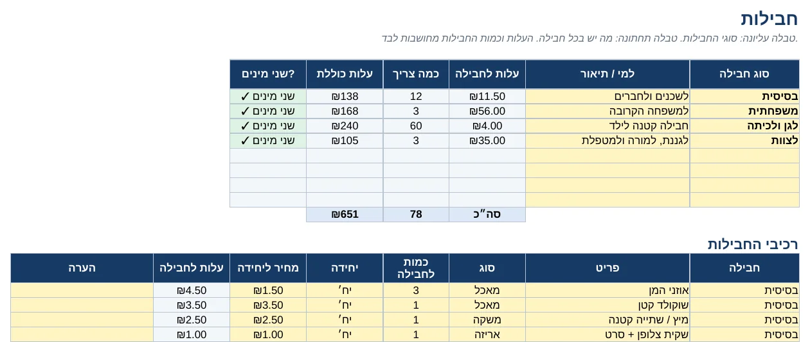
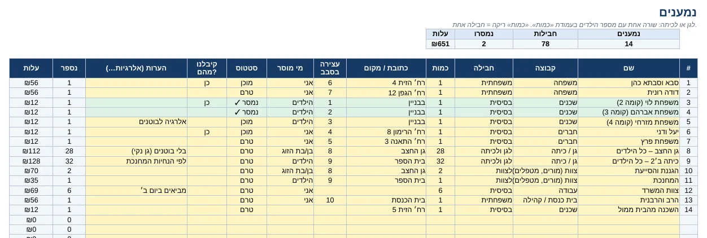
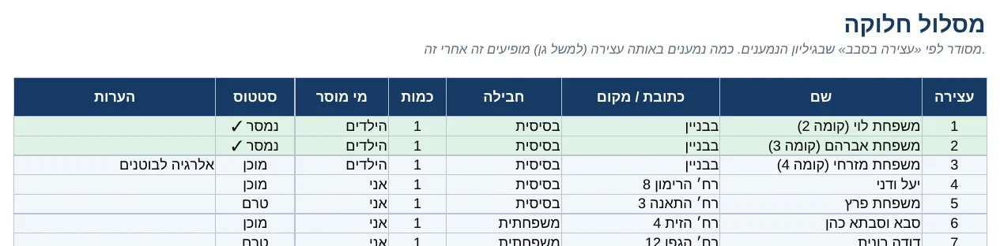

מתכנן משלוחי מנות 2027 באקסל: נמענים, חבילות, קניות ומסלול חלוקה
רושמים למי שולחים ומה שמים בכל חבילה, והקובץ מחשב כמה חבילות מכל סוג צריך, כמה זה עולה מול התקציב, בונה רשימת קניות ומסדר מסלול חלוקה לבוקר פורים.
- Excel ו-Google Sheets
- עד 150 נמענים ו-8 סוגי חבילות
- רשימת קניות אוטומטית
- מסלול חלוקה לפי סדר
- הורדה מיידית
רוצים קודם הערכה מהירה? מחשבון תקציב משלוחי מנות החינמי. ומי שמתכנן גם את פסח: פורים + פסח יחד ב-₪29.

מה יש בקובץ
7 גיליונות מחוברים. מקלידים רק בתאים הצהובים.
נמענים
שם, קבוצה (משפחה, שכנים, גן…), איזו חבילה, כמות, כתובת, מי מוסר, סטטוס ו«קיבלנו מהם?».
סוגי חבילות
עד 8 סוגים. עלות לחבילה מחושבת מהפריטים, ובדיקה אוטומטית של «שני מינים».
רשימת קניות
כל פריט כפול מספר החבילות, עם עלות, סיכום לפריט שחוזר בכמה חבילות ועמודת «נקנה».
מסלול חלוקה
מסדר את הנמענים לפי מספר העצירה, כדי לחלק בסבב אחד בבוקר פורים.
תקציב ומתנות לאביונים
תקציב כולל מול עלות בפועל, מתנות לאביונים ומחצית השקל בסיכום אחד.
דשבורד
ימים עד פורים, כמה נמסרו, עלות לפי קבוצה וחלוקה לפי סוג חבילה.
ככה זה נראה
מקובץ הדוגמה המצורף. המספרים להמחשה.



שאלות נפוצות
באיזו תוכנה זה עובד?
Excel (2010 ומעלה, גם בנייד), Google Sheets ו-LibreOffice. ב-Google Sheets: מעלים ל-Drive ובוחרים «פתיחה באמצעות Google Sheets». אין מאקרו.
איך הקובץ יודע כמה לקנות?
לכל סוג חבילה רושמים פעם אחת מה יש בה. בגיליון הנמענים בוחרים לכל אחד איזו חבילה. הקובץ סופר כמה חבילות מכל סוג צריך ומכפיל את הפריטים, כך שרשימת הקניות נבנית לבד.
ומה עם הגן או הכיתה?
שורה אחת לכל הכיתה, עם מספר הילדים בעמודת «כמות». זה נספר נכון בעלות וברשימת הקניות.
מה זה מסלול החלוקה?
נותנים לכל נמען מספר עצירה לפי הסדר שבו תעברו. גיליון «מסלול חלוקה» מסדר את כולם לפי המספר, עם כתובת, איזו חבילה ומי מוסר, ומסמנים «נמסר» תוך כדי.
הקובץ בודק «שני מינים»?
כן. לכל סוג חבילה הוא בודק שיש בה לפחות שני פריטים מסוג מאכל או משקה, ומסמן אם חסר. זו תזכורת בלבד, לא פסק הלכה.
המחירים בקובץ אמיתיים?
לא. אלה מחירים לדוגמה כדי שהחישוב יעבוד מהרגע הראשון. מעדכנים לפי החנות שלכם.
איך מקבלים את הקובץ?
מיד אחרי התשלום ב-PayPal (אפשר בכרטיס אשראי, בלי חשבון) נפתח דף הורדה עם קובץ ריק וקובץ דוגמה מלא.
מדריכים לפורים 2027
- רעיונות למשלוחי מנות לפי תקציב
- הלכות פורים בקצרה: ארבע המצוות ומקורות
- משלוחי מנות לגן ולכיתה
- כל מה שצריך לפורים 2027